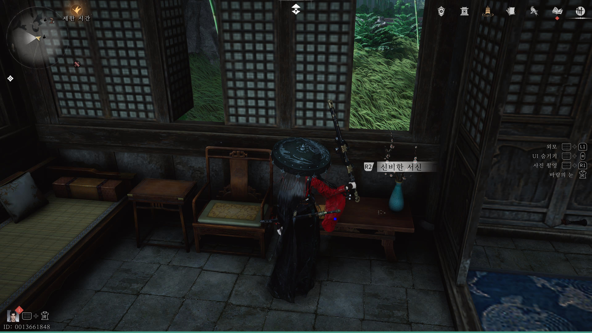
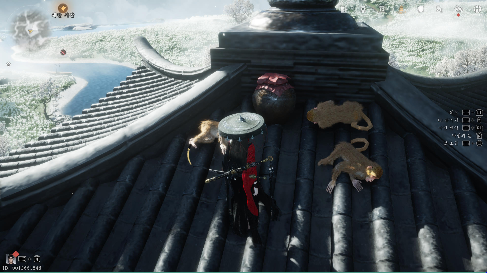
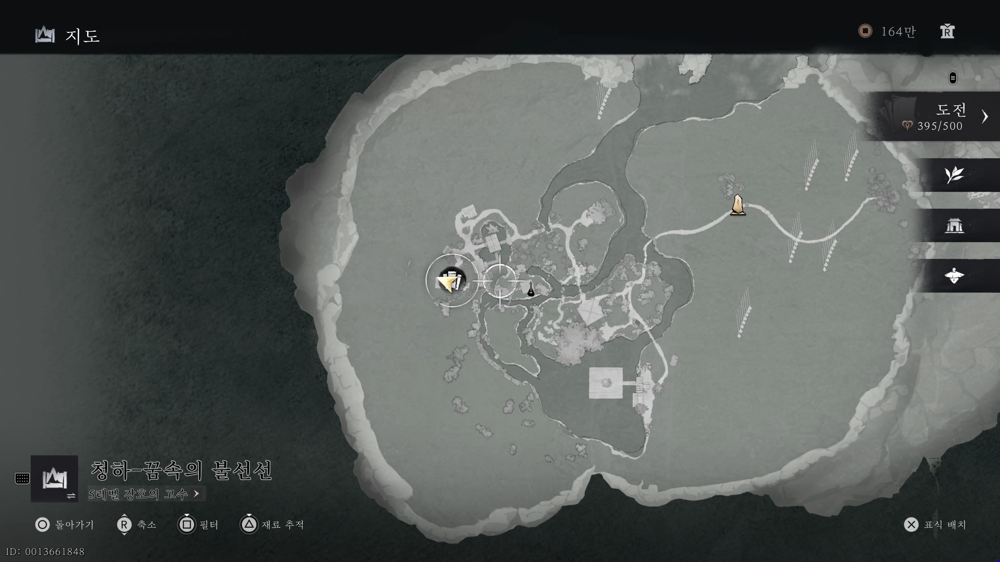

만사록
신비한 서신
향선이모에게 비밀 서신이?
📜 퀘스트 개요
향선 이모의 집에서 우연히 발견한 서신 한 통.
이 서신을 올바른 주인에게 전달해야 합니다. 불선선의 상태에 따라 전달 대상이 달라집니다.
서신 습득
향선 이모의 집으로 이동하여 바닥에 떨어진 서신을 습득하면 퀘스트가 시작됩니다.


⚠️ 주의: 위치 변경
습득한 서신을 전달해야 하는 대상은 불선선 화재 여부에 따라 달라집니다.
현재 자신의 게임 진행 상황에 맞는 곳을 찾아가세요.
서신 전달
1. 불선선이 불타기 전 (화재 전)
향선 이모 집 바로 아래에 있는 대형 저택으로 이동하세요.
그곳에 있는 NPC와 대화하면 전달이 완료됩니다.
2. 불선선이 불타고 난 후 (화재 후)
아래 위치로 이동하여 고양이 전문가를 찾으세요.
그와 대화하면 서신을 전달할 수 있습니다.


올바른 대상에게 서신을 전달하면
비밀스러운 사연이 전해지며
퀘스트는 완료됩니다.